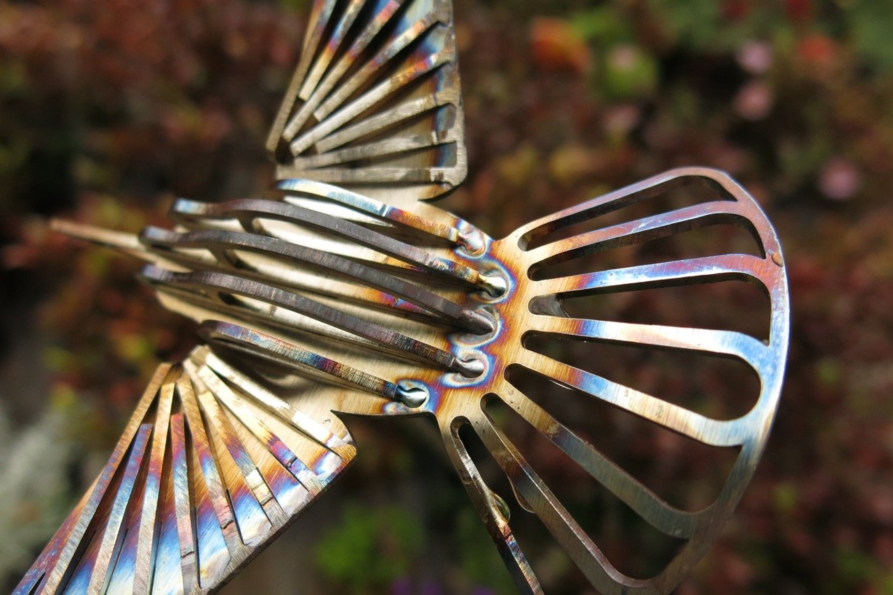

A series of dance films highlighting the talent and diversity of Alameda's Artists

Tara Pilbrow Dance & Maurice Ramirez present
A series of dance films highlighting the talent and diversity of Alameda's Artists
Uplift
Explore movies^
About project^
About UPLIFT
Shining a light on the artists working in our
city,
UPLIFT is a series of short dance films celebrating the talent and diversity of the Alameda arts
scene.
Set in a variety of locations across the Island, each film focuses on the work of one local
artist.
People fall in love with Alameda because of its small town vibe, and its quaint
Victorians, few
think of it as an arts hub. Working away in the streets, studios and public spaces of this small
town is
a community of artists whose work and influence spreads across the Bay, and throughout the
World.
A visit to JP’s website gives you a very, very brief introduction to his
work:
"JP Frary has been designing and building furniture in the San
Francisco Bay
Area since 1995. His work often contains recycled materials and is built
with an
emphasis on simplicity of form."
This is not because JP is a man of few words - far from it, JP has
an
endless stream of stories to share (indeed his 2nd career is as a
storyteller), but
more because he has a very uncomplicated, bullshit-free relation to his
artwork. He
makes what he feels inspired to make because something in a particular form
calls to him. He starts with a simple idea and follows it, riffing,
iterating,
stretching and zooming in on it until he finds satisfaction.
There is a friendly ‘little man’ who stands at the door of JPs
studio to
welcome visitors. As the narrative of the piece developed he became
something of a
White Rabbit character, leading Hannah into the swirling spirals of JP’s
fantastical
wooden world.
Walking into freelance costume designer, fabricator and dreamer, Krystal
Harferts
container space on the Alameda Maker Farm is like diving head first into
Mary
Poppins carpet bag. So many marvelous things, so little space; wild
imagination, meticulous organization. Bolo-lala celebrates Krystal's
capacity to
build fantastical characters and worlds out of an incredible range of new
and old
objects and materials.
Shawn HibmaCronan is a Bay Area native who studied sculpture and furniture
at the California College of the Arts. He utilizes a range of traditional
and cutting edge fabrication processes, to create objects in which no
material is disguised and no mechanism is hidden. His work is often meant to
be picked up, sat in, climbed on, and rolled around; hopefully providing a
memorable experience for the curious. He strives to create iconic artwork
that viewers find strikingly novel, yet familiar; with forms that all walks
of life could find magnetic and disarming. Ultimately he believes that craft
is paramount; that it is important to create lasting objects that are well
made and timelessly beautiful, inside and out.
Tara on discovering
the depth of one of Shawn's most enduring obsessions For as long as I have
known Shawn there has always been a Ford van occupying more than half of his
studio space. When I arrived at the end of last year to interview him for
the Uplift project, I expected us to get carried away with one of his newer
projects, but when I asked for an update on "Inersha" (his street-legal
sculpture) I realized that nothing could beat the unadulterated enthusiasm
and excitement he shares when talking about it. He bought the1963 Ford
Falcon Deluxe Club Wagon in 2008 and since then he has “made and remade
every single part of the thing.”
Inertia also features “Ground
Looper” a piece created for the @sfmoma Artist Soapbox Derby.